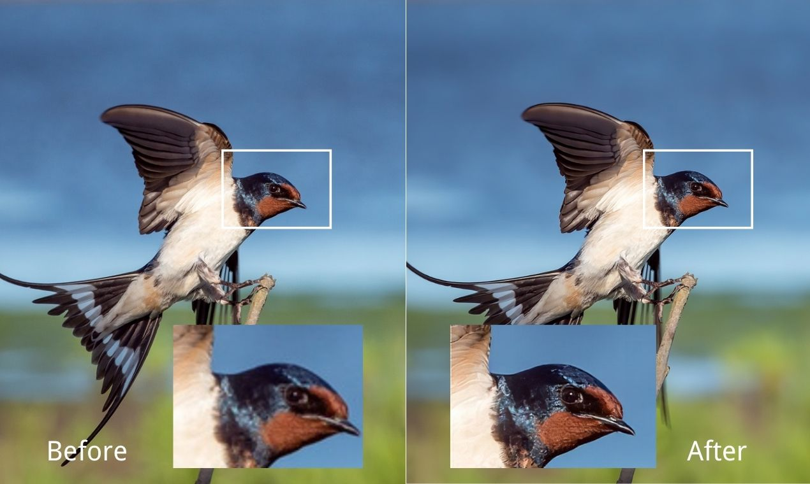

What is a Image Upscaler?
Image Upscaling is a process of upscaling the image resolution so that image looks sharper and better.
In computer graphics and digital imaging, image scaling refers to the resizing of a digital image. In video technology, the magnification of digital material is known as upscaling or resolution enhancement. When scaling a vector graphic image, the graphic primitives that make up the image can be scaled using geometric transformations, with no loss of image quality. When scaling a raster graphics image, a new image with a higher or lower number of pixels must be generated. In the case of decreasing the pixel number (scaling down) this usually results in a visible quality loss. From the standpoint of digital signal processing, the scaling of raster graphics is a two-dimensional example of sample-rate conversion, the conversion of a discrete signal from a sampling rate (in this case the local sampling rate) to another.
How Is Image Is Upscaled By Use?

We use machine learning based upscaling models to upscale a image to a higher resolution.Not only that it can also help in denoising the image.